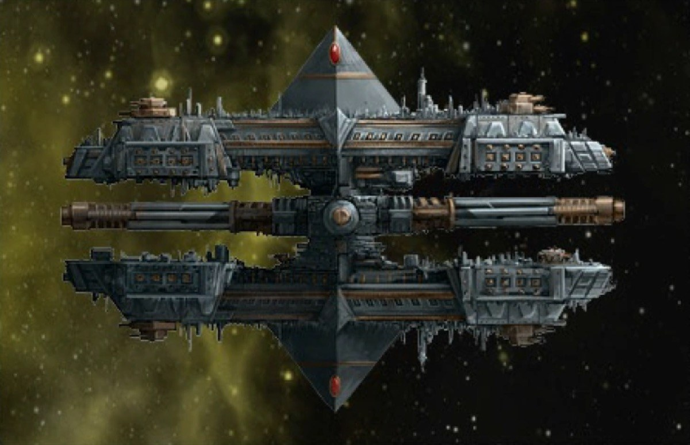
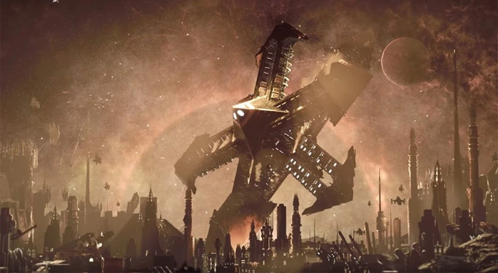

Blackstone Fortress
| Blackstone Fortress | |
|---|---|
 A Blackstone Fortress refitted as a naval base by Battlefleet Gothic, before 139.M41 Artwork © Games Workshop | |
| Type | Xenos star fortress and warp weapon |
| Makers | Unknown; attributed to the Old Ones in the War in Heaven |
| Age | Disputed: from 17,000 years to many millions of years |
| Material | Noctilith (blackstone) |
| Aeldari name | Talismans of Vaul |
| Imperial discovery | Six in the Gothic Sector, M32 |
| Armament | Warp cannon able to destroy planets and stars when linked |
| Notable use | Gothic War (139–160.M41); Fall of Cadia (999.M41) |
| Present status | The Gothic six destroyed or lost; a seventh found near Precipice, late M41 |
A Blackstone Fortress is one of a small number of immense star fortresses of unknown alien origin, built of the warp-resonant mineral noctilith, or blackstone. The Imperium found six of them drifting in the Gothic Sector of the Segmentum Obscurus in the 32nd millennium and, unable to understand them, used them for ten thousand years as naval bases. They were in fact weapons. In the Gothic War of 139–160.M41, Abaddon the Despoiler learned how to wake them and used them to destroy a world and a star. The Aeldari call them the Talismans of Vaul.[1][2]
Abaddon escaped from the Gothic War with two Fortresses. He gave one to Huron Blackheart of the Red Corsairs. The other, the Will of Eternity, he drove into the surface of Cadia in 999.M41, an act that brought about the Fall of Cadia and the opening of the Great Rift. A seventh Fortress appeared in the late 41st millennium near the world of Precipice, and expeditions have since entered it.[3][4]
Description
[edit]Each Fortress is larger than any Imperial star fort or Segmentum Fortress, shaped broadly as two great pyramids joined at the base, and made of a dark, onyx-like material harder than anything the Mechanicus can produce or cut. Inside, they contain endless chambers and passages whose arrangement seems to change. While dormant, they generated enough residual power to support human crews, and the Imperium built docks, hangars and gun batteries onto their surfaces.[1]
The Fortresses' main weapon draws on the Warp. Each can tear open a rift in realspace and release a beam of warp energy; linked together, two or more can destroy a planet, and three caused the star of the Tarantis system to explode. The material from which they are made, noctilith, can be charged either to attract or to repel warp energy, and is the same mineral used in the pylons of Cadia and found in the crust of the worlds that hold open the Nachmund Gauntlet.[2][5]
Origins
[edit]No one knows who built the Fortresses. Imperial scholars have dated them anywhere from 17,000 to 300,000 years before their discovery, while others believe them to be many millions of years old. The most widely held view in the Inquisition is that they were built by the Old Ones during the War in Heaven, some sixty million years ago, as weapons against the Necrons and their C'tan masters, who were vulnerable to the energies of the Warp. Aeldari tradition names them after Vaul, their smith-god, and treats them with fear.[2][a]
History
[edit]Discovery
[edit]The six Fortresses of the Gothic Sector were found scattered in the void in the 32nd millennium, dormant and empty. The Imperium towed them into position and built the sector's naval defence around them, with each of six sub-sectors based on a Fortress.[1][b] For ten thousand years Battlefleet Gothic boasted that none of them had ever fallen to an enemy.[1]
The Gothic War
[edit]Abaddon learned of the Fortresses in the 40th millennium, when the sorcerer Zaraphiston led him to a crone world in the Eye of Terror where a prophecy written on flayed skin described six weapons of great power. In the Gothic War, the twelfth of his Black Crusades, he obtained two ancient artefacts, the Hand of Darkness and the Eye of Night, which allowed him to shut down and control the Fortresses.[3]
Blackstone IV fell first, its power failing as Abaddon's fleet came into range. In 144.M41 Abaddon used a captured Fortress to destroy Lukitar Station, and Brinaga, with Blackstone VI, fell some months later. Two captured Fortresses then destroyed the atmosphere of Fularis II, and three together destroyed the star of Tarantis. Lord Admiral Ravensburg, with help from the Aeldari, finally forced Abaddon back into the Eye of Terror. Of the six Fortresses, four were lost; Abaddon took two with him.[1]
Thirteenth Black Crusade
[edit]Before the Thirteenth Black Crusade, Abaddon gave one Fortress to Huron Blackheart, who named it Corsair's Keep, as the price of the Red Corsairs' alliance.[3] The other, the Will of Eternity, accompanied his fleets to Cadia in 999.M41. Its weapons were crippled by the attack of the Imperial Fists star fort Phalanx, but Abaddon drove the wreck into the planet. The impact destroyed Cadia's defences and the pylons that had held back the Eye of Terror, and the Great Rift opened soon afterwards.[3][6]

The seventh Fortress
[edit]In the late 41st millennium a seventh Blackstone Fortress appeared out of the Warp near the world of Precipice, in an expanse filled with the wrecks of starships. Precipice became a boom town of explorers, rogue traders, bounty hunters and xenos, who entered the Fortress in search of its treasures. Its interior proved to be a labyrinth whose chambers shift between expeditions, guarded by its own defenders and occupied by cultists of Chaos, who also sought its secrets. Among those who entered it, according to sealed Inquisition records, was a machine of the Men of Iron.[4][c]

Timeline
[edit]| Date | Event |
|---|---|
| c. 60 million years ago (attributed) | The Fortresses built in the War in Heaven, by Inquisitorial theory |
| M32 | Six Fortresses found in the Gothic Sector and made naval bases |
| M40 | Abaddon learns of the Fortresses |
| 139–160.M41 | The Gothic War; Fularis II and Tarantis destroyed; Abaddon keeps two Fortresses |
| 144.M41 | Lukitar Station destroyed by a captured Fortress |
| Before 999.M41 | A Fortress given to Huron Blackheart as Corsair's Keep |
| Late M41 | The seventh Fortress appears near Precipice |
| 999.M41 | The Will of Eternity driven into Cadia |
See also
[edit]Notes
[edit]- ^ Some Ordo Xenos savants have suggested a link with the C'tan known as the Deceiver, who is thought to have appeared during the Gothic War in the guise of the seer Moriana.
- ^ Gothic Sector records give the discovery as M32. Some older Navy registers place it in M33.
- ^ Records do not date the appearance of the seventh Fortress precisely. The Ordo Xenos dossier places it before the opening of the Great Rift.
References
[edit]- ^ a b c d e Codex: Necrons (9th Edition), pg. 17. Games Workshop. Codex Heretic Astartes - Chaos Space Marines (8th Edition), "The Penumbra Prophecy," pg. 24. Games Workshop.
- ^ a b c The Gathering Storm - Book One - Fall of Cadia (7th Edition), pg. 28. Games Workshop. The Gathering Storm - Book Three - Rise of the Primarch (7th Edition), pp. 64, 68. Games Workshop.
- ^ a b c d Codex: Harlequins (8th Edition), "The Dance of the Ages". Games Workshop. Codex: Eye of Terror (3rd Edition), pp. 46. Games Workshop.
- ^ a b The Sabbat Worlds Crusade (Background Book), pg. 73 (Fortress Worlds in Segmentum Pacificus). The Thirteenth Black Crusade (Background Book), pp. 81, 84, 87.
- ^ Warhammer Quest: Blackstone Fortress (Specialty Game), Background Guide, pp. 6-23. Warhammer 40,000: Forgebane (Boxed Set Book), pp. 2-3, 9, 13.
- ^ Battlefleet Gothic Rulebook, pp. 78, 95-97, 100-102, 127, 140, 145, 159. Battlefleet Gothic Armada (PC Game).